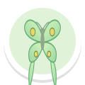

Field Notes: a notebook page per friend

Monarch
Met on 4 Nov
Monarchs fly thousands of miles to the same warm forests every winter.
▶ ListenI read it!
1. Before: sepia sticker, fact, Listen and I read it!
Monarch
Met on 4 Nov
Monarchs fly thousands of miles to the same warm forests every winter.
▶ Listen✓ Stamped
Page added to your notebook.
2. After: the leaf stamp presses in at the bottom corner

A new friend
Meet this friend to fill this page.
3. A friend not met yet: faint outline, no buttons, no stamp spot